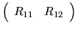

The QR factorization with column pivoting does not enable us to compute
a minimum norm solution to a rank-deficient linear least squares problem,
unless R12 = 0. However,
by applying further orthogonal (or unitary) transformations
from the right to the upper trapezoidal matrix
,
using the routine xTZRQF (or xTZRZF), R12 can be eliminated:
The matrix Z is not formed explicitly, but is represented as a product of elementary reflectors, as described in section 5.4. Users need not be aware of the details of this representation, because associated routines are provided to work with Z: xORMRZ (or xUNMRZ) can pre- or post-multiply a given matrix by Z or ZT (ZH if complex).
The subroutine xTZRZF is a faster and blocked version of xTZRQF. xTZRQF has been retained for compatibility with Release 2.0 of LAPACK, but we omit references to this routine in the remainder of this users' guide.